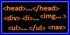
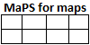

Welcome to the Terminal!
First time visitor? Click here for a brief message!General Release and Information Display (GRID) for 2021
The GRID below is an overview of map projects and other items that are in the planning phase, being worked on or have been released. This includes the following products: this website, Air Traffic Replay Projects (ATRPs), videos, major map updates/new maps in the works and my map toolbox. Check back at your convenience for updates to the GRID!
| Product | Information | Completion Date | Status |
|---|---|---|---|
|  | Website Overhaul | New colours, fully responsive, additional content | TBD | On Hold |
| CMI Extended Abel Jets Edition | New version of CMI-E with major changes for Abel Jets | April 4, 2021 | ||
|  | New additions to MaPS for Maps document | Next Update April 2021 | Updated periodically |
| Release of updated toolbox with new additions | After release of CMI-E Abel Jets Edition | Updated periodically |
- Product = Shows a small icon of a product (see below for long-forms of acronyms)
- Information = For maps: what is being done to the product | What is changing/being updated
~~ For videos: Type of video | Which airport/map | Which observation point the video will be "recorded" from
~~ For all other items, this section will be self-explanatory - Completion date = estimated date of completion/arrival date. If no date is set, this column will show "TBD" (To Be Determined)
- Status = This will show four distinct statuses: scheduled, in-progress, delayed and for products that have "arrived" at the terminal, or have been released, two alternate-flashing green lights:
- ATRP = Air Traffic Replay Project
- T-SiPs = Turbofan Silent Productions
- MaPS = Measurements and Preparation Standards for YSFS maps (document)
Brief message for first-time visitors (click to show/hide message)
Hi! This is
Turbofan from
YS Flight Headquarters. If civilian and commercial flight
simming is your flight of fancy, you're at the right place! I specialize in creating addon maps for the
YS Flight Simulator.
I invite you to take a look around the website, including my YSFS Addon page, where you will find all of
my maps. Included are two sliding image galleries so you can preview the maps. I'm not known for aircraft
addons or repaints (there are amazing aircraft addon creators/modders). However, I have two repaint packs of
Taskforce 58's Beechcraft Super King Air 200 to my name.
You can find them on the addons page as well.
As you've likely noticed already, the GRID will show what updates/projects I have planned, am in the process
of working on, or have completed and released. You can come here and check it out at your convenience. I also
encourage you to check out YS Flight Headquarters (a ton of information there!) and my links page for some of
the best addons out there for YS Flight!
Happy Flying!